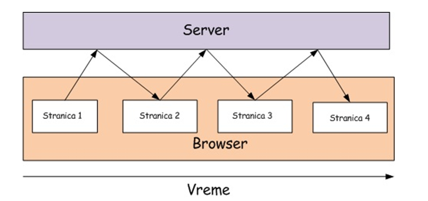
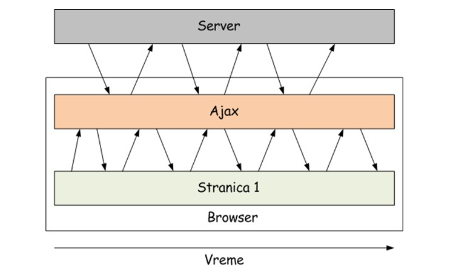

Ajax je skraćenica od “Asinhroni JavaScript + XML” (iako se danas uglavnom koristi JSON), a predstavlja grupu tehnologija namenjenu za dinamičko kreiranje Web stranica. Korišćenjem AJAX-a poboljšavamo kvalitet interkativnosti sa korisnikom, uz želju da što više liči na desktop aplikacije (prema brzini interakcije). Termin AJAX prvi put je upotrebljen u februaru 2005. godine, kada je Džesi Džejms Garet (Jesse James Garret), dizajner informacionih sistema i direktor kompanije Adaptive Path, pokušao da nađe odgovarajuću skraćenicu za grupu tehnologija koju je predlagao svom klijentu. Tehnologije potrebne za postojanje AJAX-a su postojale i ranijih godina ali je glavni razlog za slabiju upotrebu svih tehnika korišćenih u AJAX-u, nedostatak podrške od strane web čitača.
Najbitnija stvar koja je uticala na brz razvoj AJAX-a jeste trenutak na tržištu u kojem su veliki igrači Internet industrije želeli da težište korišćenja računara prenesu sa desktopa na web stranice, za šta im je bila potrebna upravo tehnologija.
Ideja na kojoj se zasniva Ajax jeste da se stranica na kojoj se odvija Web aplikacija učita samo jednom, a da se svaka dalja komunikacija sa serverom izvršava asinhrono bez blokiranja interfejsa i bez ponovnog učitavanja čitave stranice.
Da bi se shvatio koncept AJAX tehnologija, neophodno je objasniti razliku izmenu sinhronog i asinhronog prenosa podataka između klijenta i servera. U sinhronom načinu rada procesi se izvode sekvencijalno. Izmedju dva procesa postoji jaz koji je jednak vremenu izvodjenja drugog procesa. Dakle, osnovni proces komunikacije izmedju klijenata i servera može se opisati na sledeći način: klijent šalje zahtev ka serveru, podaci se prenose ka serveru, server obrađuje podatke I zatim ih vraća klijentu. Ono što je primetno sa slike dole je da postoji vremenski interval izmedju pravljenja zahteva i odgovora na isti. Za vreme tog intervala klijent čeka, bez mogućnosti da pravi nove zateve ili nastavi svoje korišćenje web aplikacije. Može se zaključiti da kod sinhronog prenosa podataka ne postoji mogućnost za eliminisanje čekanja zato što se procesi obavljaju jedan za drugim, čak i ukoliko za to nema potrebe.
Kod asinhronog prenosa podataka izmedju klijenata i servera karakteristično je da se korisničko korišćenje web aplikacije nikada ne prekida. Za razliku od sinhronog režima rada, ovde korisnik može da nastavi korišćenje aplikacije nezavisno od toga hoće li sistem odgovoriti na njegov zahtev neposredno ili nešto kasnije. Ono što je uočljivo na prvi pogled su neprekidne linije koje označavaju aktivnosti korisnika i AJAX-ovog engine-a. Klasične aplikacije funkcionišu tako što šalju zahtev, server ih obrađuje i konačno vraća odgovor. Međutim, sve vreme rada servera i aplikcaija je «zamrznuta». Kada server kompletira rad, kao odgovoro korisnik dobija novu stranicu. Sa asinhronom komunikacijom u pozadini se odvija komunikacija, a korisnik uopšte ne zna da se tako nešto dešava.
AJAX predstavlja web razvojnu tehniku za kreiranje interaktivnih web sadržaja. AJAX tehnologija se zasniva na razmeni malih količina podataka sa serverom, kako korisnik ne bi stalno morao da osvežava stranicu. Na taj način se omogućava potpuna interaktivnost, efikasnost i poboljšava funkcionisanje stranice uopšte. AJAX nije tehnologija sam po sebi, već termin koji se odnosi na korišćenje grupe tehnologija.
Ideja koja se krije iza AJAX-a jeste da se stranica na kojoj se odvija web aplikacija učita samo jednom, a da se svaka dalja komunikacija sa serverom sakrije od očiju korisnika i obavlja bez ponovnog učitavanja čitave stranice. Svaki prenos podataka između servera i klijenta (u slučaju AJAX-a to je browser) vrši se u pozadini. Jasno je da je ovo nemoguće izvesti statičkim HTML-om, pa tu na scenu stupa JavaScript. JavaScript je zadužen za komuniciranje sa serverom – slanje HTTP zahteva, prijem podataka sa servera i njihov prikaz na stranici, a i interakcija sa korisnikom postiže se korišćenjem ovog jezika.
Suprotno uobičajenom gledištu, AJAX se zapravo mora posmatrati kao sasvim novi pristup primene već postojećih tehnologija, te se ni u kom slučaju ne može smatrati novim programskim jezikom, kako ga ljudi često karakterišu. Njegova primena je najpre vezana za stvaranje prijateljskog okruženja za zahteve različitih korisnika, jer upravo primenom ove tehnologije se postiže da se određene web aplikacije znatno jednostavnije koriste.
Ko god ima želju da se upozna sa osnovama ove tehnologije bi najpre trablo da zna da je implementacija AJAX-a prilično jednostavna, ali pod uslovom da ste upoznati sa korišćenjem JavaScript-a i HTML-a, primarno.
Najvažnije je naglasiti da je svaka aplikacija koja je bazirana upravo na AJAX tehnologiji, zapravo potpuno nezavisna od web pregledača, te da profesionalni programeri koji implementiraju ova pravila svakako poštuju postojeće web standarde, a kojih se naravno i pomenuta tehnologija u potpunosti pridržava.